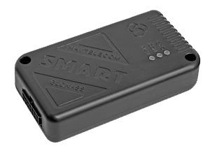

Каталог
Главная
Статьи
Галерея изображений
Регистрация
Контакты
Оборудование ГЛОНАСС-мониторинга транспорта
СМАРТ S-241x — линейка недорогих трекеров
СМАРТ S–2410

Самый простой трекер со встроенными ГЛОНАСС/GPS- и GSM-антеннами, без встроенной АКБ. Входные линии для подключения концевых выключателей и аналоговых датчиков.
- Встроенные чувствительные ГЛОНАСС/GPS- и GSM-антенны
- 2G-модем
- 1 SIM-карта
- Защита по питанию до 200В
- 4 дискретные входные линии
- 1 аналоговая линия (настраивается, как дискретная)
- 1 управляющая выходная линия
- Bluetooth 4.0
СМАРТ S–2411

Трекер со встроенными ГЛОНАСС/GPS- и GSM-антеннами и встроенной АКБ. Входные линии для подключения концевых выключателей и аналоговых датчиков.
- Встроенная АКБ 110 мА/ч
- Встроенные чувствительные ГЛОНАСС/GPS- и GSM-антенны
- 2G-модем
- 1 SIM-карта
- Защита по питанию до 200В
- 4 дискретные входные линии
- 1 аналоговая линия (настраивается, как дискретная
- 1 управляющая выходная линия
- Bluetooth 4.0
Наверх